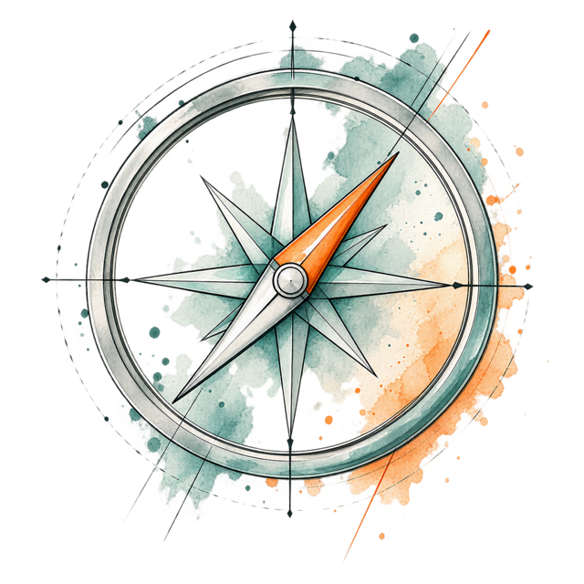

Bevor Sie entscheiden, was Sie tun, finden Sie heraus, was Sie wirklich brauchen.
Vier Stunden Standortbestimmung in kleiner Runde. Sie arbeiten an Ihrer eigenen Situation und gehen mit einem klaren nächsten Schritt nach Hause.
- 4 Stunden
- 3 bis 6 Teilnehmende
- 390 € netto
Die Frage kommt oft zu früh
„Welches Training brauchen wir?“
Diese Frage stellen viele Unternehmen, bevor klar ist, worum es eigentlich geht. Dann wird Geld in eine Maßnahme gesteckt, die am eigentlichen Thema vorbeigeht.
Der KomPass Führung setzt einen Schritt früher an. Erst wird sichtbar, was los ist. Dann wird entschieden, was hilft.
Typische Anlässe:
- Gute Leute gehen, und keiner weiß genau, warum.
- Das Team macht Dienst nach Vorschrift.
- Führungskräfte sind überlastet oder unsicher in ihrer Rolle.
- Besprechungen kosten Zeit und bringen wenig.
- Bisherige Entwicklungsmaßnahmen haben kaum etwas verändert.
Sie erkennen etwas davon wieder, sind sich aber nicht sicher, was dahintersteckt? Genau dafür ist das Format gedacht.
Drei Schritte zur Orientierung
Standort bestimmen.
Wo stehen wir wirklich?Was beobachten Sie im Alltag? Was funktioniert schon gut? Die Ausgangslage wird greifbar.
Klarheit gewinnen.
Was steckt dahinter?Mögliche Muster einordnen und Annahmen prüfen. Durch Blickwechsel statt vorschneller Diagnose.

Richtigen Hebel finden.
Wo setzen wir an?Den nächsten sinnvollen Schritt ableiten. Ohne vorschnell eine Maßnahme festzulegen.
Erst Klarheit. Dann die richtige Entscheidung.
Mein KomPass Führung
Sie kaufen keine vier Stunden Workshop. Sie gehen mit einer schriftlichen Standortbestimmung und einem konkreten Plan für Ihr Unternehmen nach Hause: Was Priorität hat, was sich lohnt und was Sie konkret angehen. Selbst erarbeitet und mit Rückmeldung aus der Runde.
-
Standort
Wo stehen wir?
Was Sie im Alltag beobachten, klar benannt. Auch das, was schon gut funktioniert.
Zum Beispiel„Zwei erfahrene Teamleiter haben dieses Jahr gekündigt. Entscheidungen landen fast alle bei der Geschäftsführung.“ -
Ziel
Wo wollen wir hin?
Was stattdessen anders sein soll. So konkret, dass Sie es später überprüfen können.
Zum Beispiel„Unsere Teamleiter entscheiden im eigenen Bereich selbst und bleiben uns erhalten.“ -
Klärungsbedarf
Was wissen wir noch nicht?
Die offenen Fragen, die Sie klären sollten, bevor Sie Geld in eine Maßnahme stecken.
Zum Beispiel„Fehlt es an Spielraum, an Rollenklarheit oder an der Zusammenarbeit mit uns?“ -
Hebel
Wo setzen wir an?
Der nächste sinnvolle Schritt. Selbst handeln, genauer hinsehen oder Unterstützung holen.
Zum Beispiel„Erst Einzelgespräche mit den Teamleitern führen, dann über ein Training entscheiden.“
Am Ende wissen Sie, wo Sie stehen und welcher Schritt als Nächstes sinnvoll ist.
Für Entscheider im Mittelstand
Passt, wenn Sie
- Geschäftsführer, Inhaber oder Personalverantwortlicher sind,
- im Führungsalltag etwas beobachten, das Sie nicht loslässt,
- vor einer Investition in Entwicklung Klarheit wollen,
- bereit sind, an Ihrer eigenen Situation zu arbeiten.
Nicht zu erwarten
- Patentrezepte oder fertige Musterlösungen
- Ein Vortrag zum Zurücklehnen
- Eine schnelle Diagnose nach wenigen Stunden
- Ein verstecktes Verkaufsgespräch
Klein und persönlich
Die kleine Gruppe ist Absicht. Nur so bleibt Zeit für jede einzelne Situation.
- Dauer
- 4 Stunden
- Gruppe
- 3 bis 6 Teilnehmende aus verschiedenen Unternehmen
- Danach
- Auf Wunsch gemeinsames Essen mit Raum für Einzelgespräche
- Follow-up
- Persönliches Telefonat etwa eine Woche später: für Fragen, die seitdem aufgekommen sind, Rückmeldung zu Ihrem KomPass und, wenn nötig, eine Kurskorrektur
Inklusive Arbeitsmaterial, Ihrem persönlichen KomPass und dem Follow-up-Telefonat.
Jetzt buchenAnna Füller
Weiterbildung wirklich wirksam machen. Dafür setzt sich Anna Füller ein, mit einfachen, aber fundierten Konzepten.
Die Begleitung von Menschen und Organisationen in Entwicklungsprozessen ist der rote Faden in ihrem Werdegang. Ihre Schwerpunkte: Führungskräfte-Entwicklung, Lerncoaching und Lernbegleitung, die wirksame Gestaltung von Trainings und Persönlichkeitsentwicklung im beruflichen Umfeld.
- Soziologin M.A.
- Master in Unternehmensführung und -beratung
- Business-Trainerin und Coach
- Akkreditierte Beraterin für Insights MDI®, EQ und OutMatch ASSESS®
- Zertifizierte interkulturelle Trainerin und Lerncoach
Häufige Fragen
Ist das ein Führungstraining?
Nein. Sie lernen keine Methoden für den Alltag, sondern sortieren Ihre eigene Situation. Am Ende wissen Sie, wo Sie stehen und wo es sich lohnt, genauer hinzusehen.
Was passiert nach dem Workshop?
Etwa eine Woche später telefonieren wir mit Ihnen. Dabei geht es um Fragen, die seitdem aufgekommen sind, um Ihre Erfahrungen mit dem KomPass im Alltag und darum, ob der Kurs noch stimmt. Wenn sich weiterer Klärungsbedarf ergibt, kann eine vertiefte Analyse in Ihrem Unternehmen sinnvoll sein. Das muss es aber nicht. Manchmal ist der nächste Schritt ein ganz anderer.
Muss ich etwas vorbereiten?
Nein. Bringen Sie Ihre Beobachtungen aus dem Alltag mit. Je konkreter, desto mehr nehmen Sie mit.
Was ist mit Vertraulichkeit?
Was in der Runde besprochen wird, bleibt in der Runde. Die Teilnehmenden kommen bewusst aus unterschiedlichen Unternehmen.
Wie melde ich mich an?
Direkt online über den Button „Jetzt buchen“. Dort sehen Sie die aktuellen Termine und freien Plätze und buchen Ihren Platz verbindlich. Bei Fragen vorab erreichen Sie uns telefonisch unter 040 69 63 853 0 oder per E-Mail an info@kompetenzkompanie.de.
Erst Klarheit. Dann die richtige Maßnahme.
Vier Stunden, eine kleine Runde und ein Ergebnis, mit dem Sie weiterarbeiten können. Die Plätze sind auf sechs begrenzt.
Jetzt buchenOder rufen Sie uns an: 040 69 63 853 0